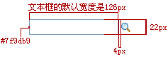
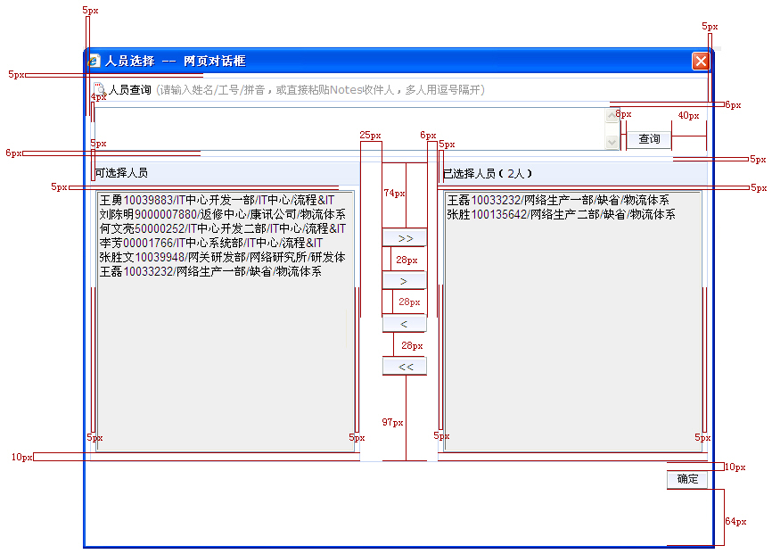
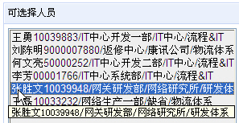

1.1 人员单选控件外观
| 规则编号 | 对象 | 外观描述 |
| 【规则1-1-1】 | 人员单选文本框描述 |
1. 单选文本框的默认宽度是126px，可根据界面排版需要适当延长文本框的宽度；（如下图所示）  |
| 【规则1-1-2】 | 人员单选弹出LOV窗口描述 |
1、人员单选LOV弹出窗口默认大小为宽668px 高470px，窗口不可调整大小； 2、人员单选LOV弹出窗口中的文本框的默认宽度为206px,高度为22px; 3、人员单选LOV弹出窗口间距示意图;（如下图所示）
|

1.2 人员多选控件外观
| 规则编号 | 对象 | 外观描述 |
| 【规则1-2-1】 | 人员多选多行文本框描述 |
1.当文本框中的内容未超出编辑范围时，滚动条为灰色禁用状态，当超出编辑范围时，滚动条呈现可用状态；（如下图所示）
2.多行文本框的最小宽度为170px，最小高度为47px, 可根据界面排版需要适当延长或缩短文本框的宽度；（如下图所示） |
| 【规则1-2-2】 | 人员多选LOV弹出窗口描述 |
1、人员多选LOV弹出窗口默认大小为 宽:709px 高562px，窗口不可调整大小； 2、人员多选LOV弹出窗口中的多行文本框的默认宽度为593px，文本框的宽度不可随意更改； 3、人员多选LOV弹出窗口间距示意图：  4、当可选、已选列表框中的数据记录超过列表默认高度时，列表内可出现纵项滚动条； 5、当人员信息过长显示不全时TIPS提示内容为完整的人员信息；（如下图所示）  |